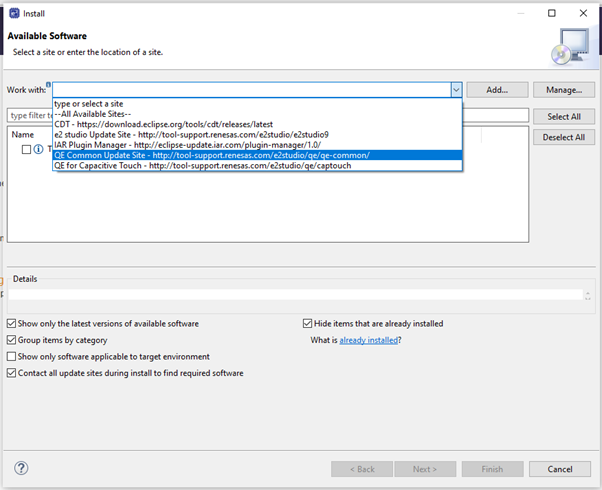
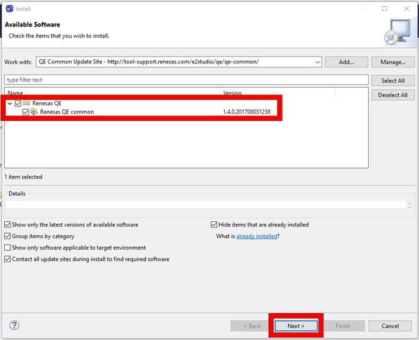
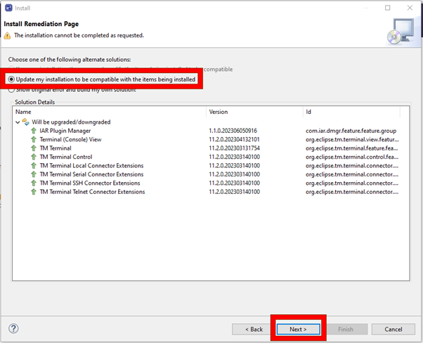
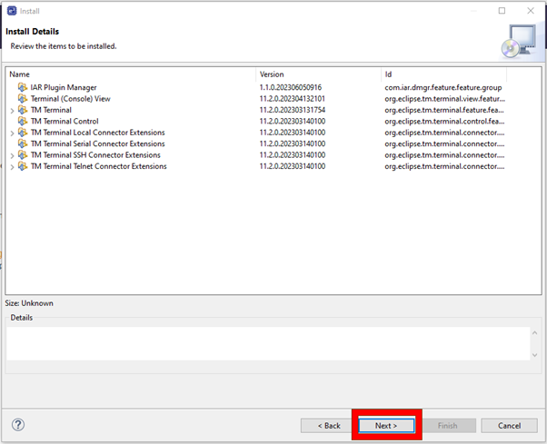
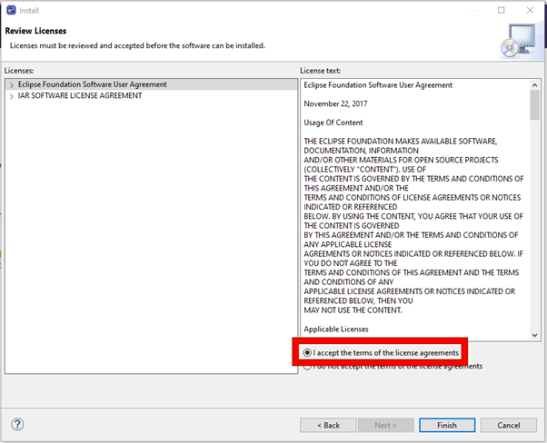
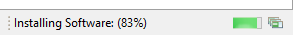
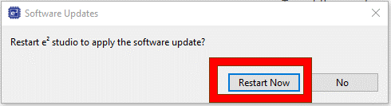
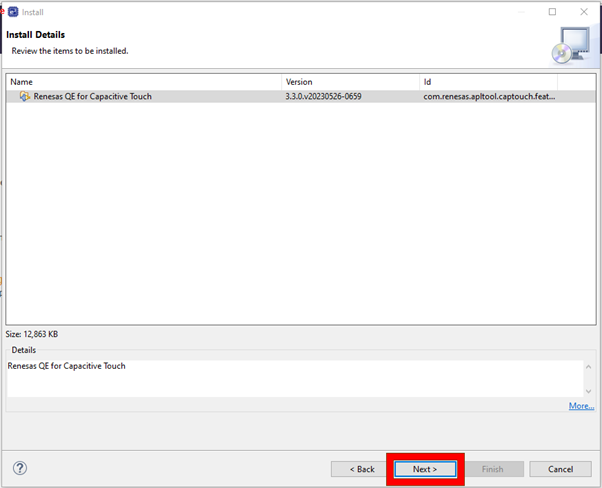
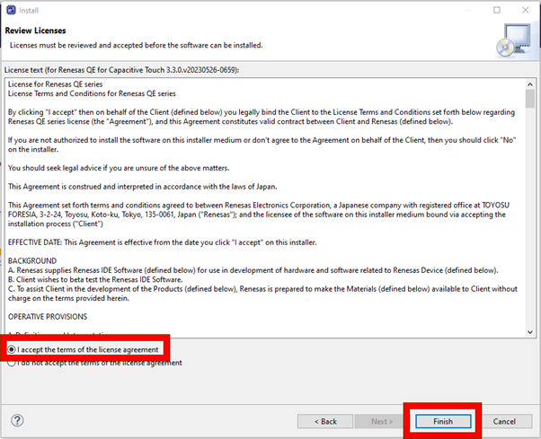
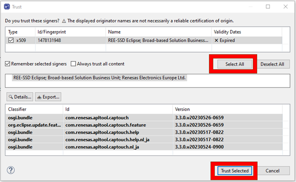

Here we will guide you through installaing the QE for capacitive touch tools to your existing
installation.
Please note: if you have have already installed QE tools during your e2studio installation you can
skip this section.
1.1 QE Common Update 1/6
After launching e² studio & opening/selecting a workspace, perform the following:
[Help] → [Install New Software]
1.2 QE Common Update 2/6
Using the dropdown in the dialog "Work with:" please select the QE Common Update Site.
1.3 QE Common Update 3/6
Select the latest version of the Renesas QE common tools and click Next >.
1.4 QE Common Update 4/6
You will be potentially confronted with an Install Remediation Page - pleas make the selections shown in the below image.
1.5 QE Common Update 5/6
Ensure the install details reflect the image below and again click Next >.
1.6 QE Common Update 6/6
Now please accept the license agreements and click Finish.
In the bottom right of e2studio you will notice the installation is progressing.
When the Software Updates diialolgg appears, please click Restart Now.
1.7 QE Capacitive Update 1/6
Once the restart has completed, perform the following:
[Help] → [Install New Software]
1.8 QE Capacitive Update 2/6
This time select the Add... button and using the dialog input the following information:
Name: QE for Capacitive Touch
Location: http://tool-support.renesas.com/e2studio/qe/captouch
1.9 QE Capacitive Update 3/6
After waiting for the dialog to fetch the update data, please select the newest Renesas QE for Capacitive Touch tools and click Next >.
1.10 QE Capacitive Update 4/6
Ensure the install details reflect the image below and again click Next >.
1.11 QE Capacitive Update 5/6
Now please accept the license agreements and click Finish.
In the bottom right of e2studio you will notice the installation is progressing.
You may be asked to trust some cerificates, please do so as shown below.
When the Software Updates diialolgg appears, please click Restart Now.
1.12 QE Capacitive Update 6/6
To verify the installation was a success, please do:
[Renesas Views] → [Renesas QE]
And check the views in the image below are available to you.